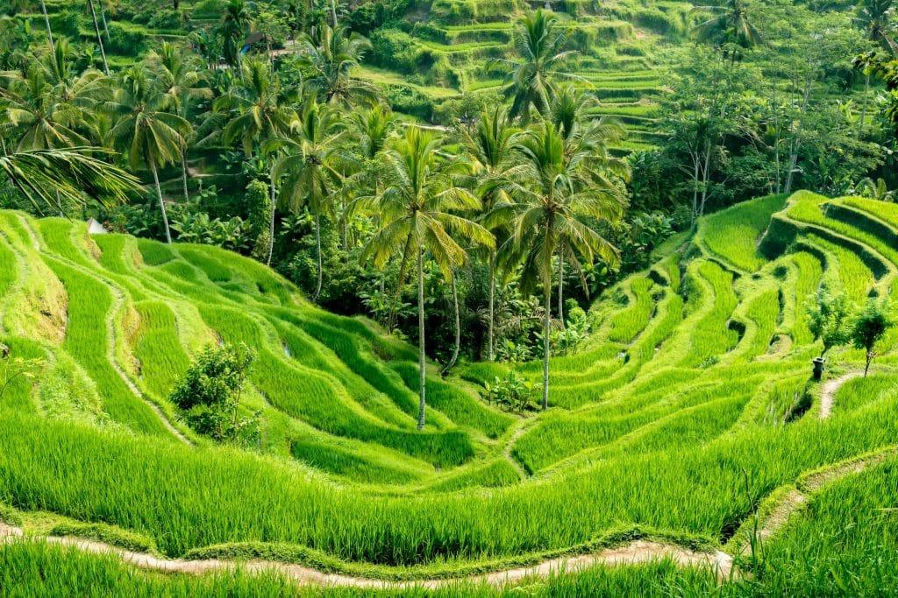
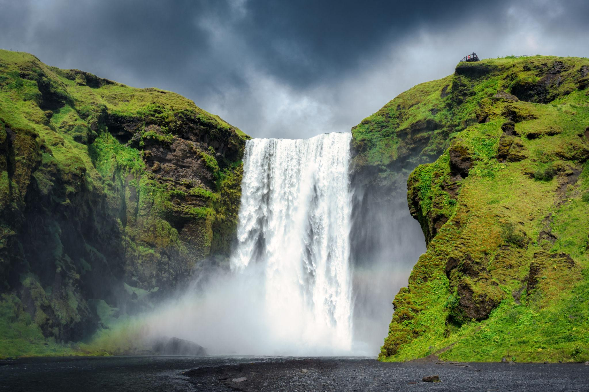

Explore Destinations
Click on a destination name to jump to that section:
Bali | Japan | Switzerland | IcelandBali, Indonesia

Bali is known for its beaches, temples and tropical scenery.
Japan
Japan is famous for cherry blossoms, traditional temples and modern cities.
Switzerland

Switzerland is a great place to see mountains and lakes.
Iceland

Iceland has waterfalls, glaciers and amazing natural views.
Photo Gallery (Scroll Horizontally)
Destination Comparison
| Destination | Best For | Suggested Stay |
|---|---|---|
| Bali | Beaches | 5 days |
| Japan | Culture | 7 days |
| Switzerland | Mountains | 6 days |
| Iceland | Nature | 5 days |
| These are sample suggestions, not fixed travel requirements. | ||